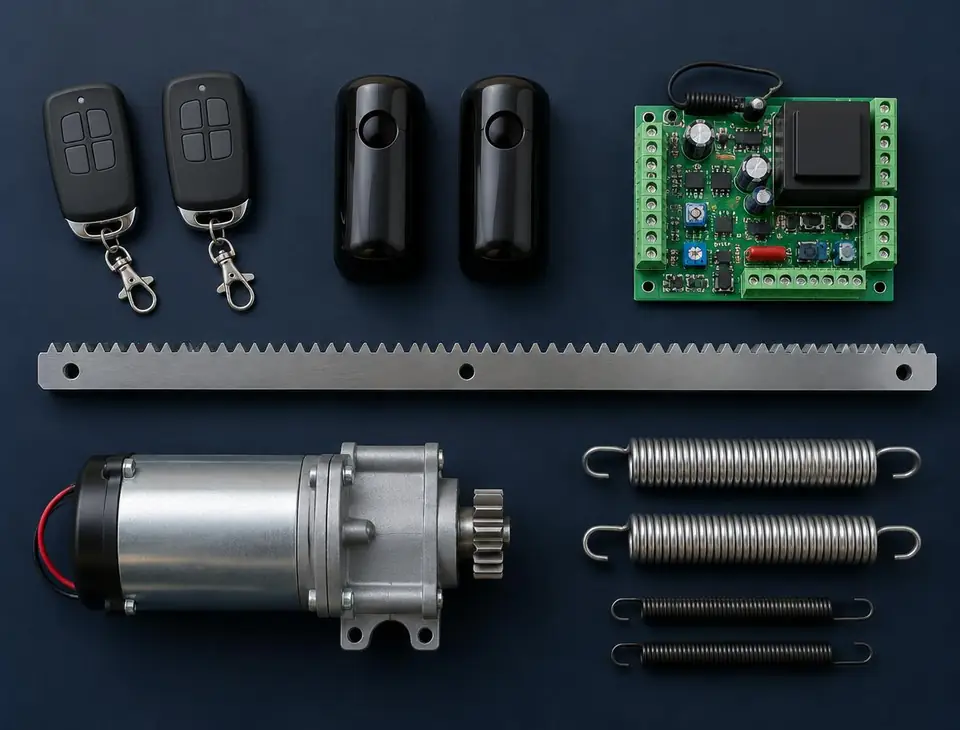

موتور باب الكراج
المحركات السقفية بالسلسلة أو السير، والمحركات الجانبية لأبواب الكراج المقطعية والقلابة.

إصلاح محركات أبواب الكراجات والرول والسحاب، وتصليح ماكينة سحب الأبواب، وصيانة لوحات التحكم والريموتات والحساسات، مع توفير قطع غيار أبواب كراج أصلية بالرياض.
الدينمو (المحرك) هو الذي يحرك باب الكراج أو البوابة، وأي ضعف فيه ينعكس مباشرة على أداء الباب. نفحص الدينمو كهربائياً وميكانيكياً لنحدد العطل بدقة: هل هو في الملفات، أم المكثف، أم التروس، أم الحساسات الداخلية، أم لوحة التشغيل.
نتعامل مع مختلف أنواع المحركات وماكينات السحب المنتشرة في السوق السعودي:
المحركات السقفية بالسلسلة أو السير، والمحركات الجانبية لأبواب الكراج المقطعية والقلابة.
ماكينة سحب الأبواب الجانبية للبوابات السكنية والتجارية بأوزان مختلفة.
محركات الأذرعة الخطية والمحركات الأرضية للأبواب المفصلية.
المحركات الأنبوبية والجانبية لأبواب الرول والمحلات والبايكات.
محركات الأبواب المقطعية الكبيرة وأبواب المستودعات والمحطات.
إصلاح كروت التشغيل، وبرمجة الريموتات، وتركيب وضبط حساسات الأمان.

جودة القطعة تحدد عمر الإصلاح. لذلك نوفر قطع غيار أصلية ومتوافقة مع بابك، ونركبها ونختبرها في موقعك:
كثير من أعطال الأبواب الأوتوماتيكية لا تكون في المحرك أصلاً، بل في الإلكترونيات المحيطة به:
هي «عقل» الباب؛ تستقبل إشارة الريموت وتتحكم في اتجاه المحرك وسرعته ونقاط توقفه. نفحص اللوحة ونصلح أعطالها أو نركب لوحة بديلة متوافقة ونعيد ضبط إعداداتها.
نبرمج الريموتات الجديدة، ونمسح الريموتات المفقودة من ذاكرة اللوحة حفاظاً على أمان منزلك أو منشأتك.
حساسات الأمان (الخلايا الضوئية) توقف الباب أو تعكس حركته عند مرور شخص أو سيارة. نركبها ونضبط محاذاتها، ونتأكد أنها تعمل قبل التسليم.
اتصل أو أرسل رسالة واتساب مع وصف للمشكلة، ويُفضَّل إرسال صورة أو مقطع قصير للباب.
يصل الفني إلى موقعك ويفحص الباب والمحرك والكهرباء والحساسات لتحديد سبب العطل بدقة.
نشرح لك العطل والحل المقترح وقطع الغيار المطلوبة قبل البدء في العمل.
نُصلح أو نركّب، ثم نجرب الباب عدة مرات مع الريموت والحساسات ونسلّمه جاهزاً للاستخدام.
نصل إليك بالقطع والأدوات في:
من أبرز العلامات: صوت طنين دون حركة، أو حركة بطيئة وثقيلة، أو سخونة المحرك بسرعة، أو توقفه بعد ثوانٍ من التشغيل، أو صدور رائحة احتراق. عند ظهور أي منها أوقف التشغيل واطلب الفحص.
نبدأ بالإصلاح متى كان ممكناً ومجدياً، مثل تغيير التروس أو المكثف أو الحساسات الداخلية أو إصلاح اللوحة. ونقترح الاستبدال فقط إذا كانت الماكينة غير قابلة للإصلاح أو غير مناسبة لوزن الباب.
في أغلب الحالات نعم، بشرط توافق تردد الريموت مع مستقبل لوحة التحكم. نحدد الريموت المتوافق ونبرمجه في موقعك.
قد يحدث ذلك بسبب تذبذب الكهرباء أو دخول الماء أو الحشرات إلى صندوق اللوحة أو تلف أحد المكونات. نفحص اللوحة ونصلحها أو نستبدلها بلوحة متوافقة.
نوفر قطع غيار أصلية ومتوافقة مع نوع الباب والمحرك، ونوضح لك القطعة المقترحة قبل تركيبها.